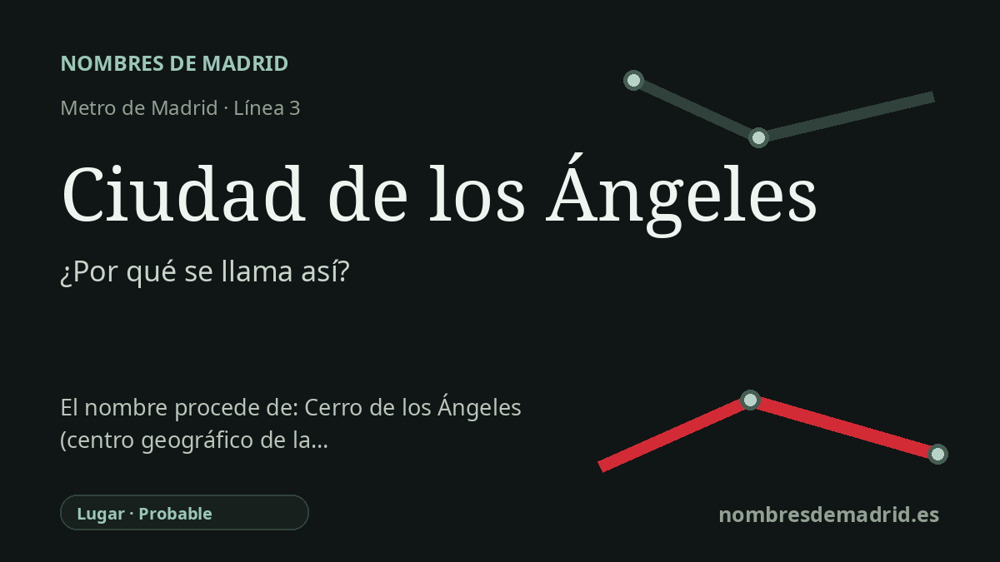

Publicado el · Investigación de Nombres de Madrid · Cómo verificamos cada origen · 10 fuentes consultadas
Respuesta rápida
Debe su nombre al barrio de Ciudad de los Ángeles, en Villaverde. El nombre del barrio se explica localmente por su cercanía al Cerro de los Ángeles de Getafe, considerado durante mucho tiempo centro simbólico o tradicional de la Península Ibérica.
La historia del nombre
La estación de Ciudad de los Ángeles debe su nombre a la zona residencial a la que sirve en Villaverde: la Ciudad de los Ángeles, denominación popular de una parte del barrio oficial de Los Ángeles. Es, por tanto, un topónimo de lugar antes que una dedicatoria directa a una persona o a un acontecimiento. Cuando la línea 3 se prolongó hacia Villaverde Alto, la estación conservó el nombre vecinal ya utilizado por residentes, colegios, parques y calles del entorno.
La referencia más antigua que hay detrás del nombre del barrio es el Cerro de los Ángeles, en el cercano municipio de Getafe. La tradición local afirma que el nombre Ciudad de los Ángeles fue elegido en 1958 por votación popular debido a la proximidad de aquel cerro célebre. El propio cerro recibe su nombre de Nuestra Señora de los Ángeles, venerada en Getafe, y está señalado por la ermita y por el gran conjunto religioso del Sagrado Corazón.
La historia urbana es igualmente importante. La Ciudad de los Ángeles se proyectó y construyó sobre todo entre los años cincuenta y sesenta como ciudad satélite para una población trabajadora en crecimiento, incluida la inmigración llegada a Madrid desde otras regiones españolas. Las fuentes arquitectónicas relacionan el proyecto con Secundino de Zuazo, Javier de Zuazo y Manuel Muñoz Monasterio, y lo describen como una gran operación residencial junto a la carretera o avenida de Andalucía, cerca de focos industriales como la fábrica Barreiros.
El barrio conserva además un mapa cultural muy reconocible. Muchas de sus calles llevan nombres de zarzuelas, como La Verbena de la Paloma, Pan y Toros, La del Manojo de Rosas o La Alegría de la Huerta. Las fuentes locales indican que esta pauta de denominación se adoptó en 1983, después de una etapa en la que las direcciones se identificaban a menudo por números de bloque más que por nombres ordinarios de calles.
La conclusión más sólida es que la estación toma el nombre del barrio y que el nombre del barrio está verosímilmente ligado al Cerro de los Ángeles. La parte más débil es la documentación exacta del concurso popular de 1958, repetido en fuentes locales pero pendiente de una fuente primaria de archivo. También conviene matizar la condición del Cerro como centro geográfico de la Península Ibérica: las fuentes oficiales y turísticas lo presentan como centro tradicional o comúnmente considerado, mientras otros cálculos y reivindicaciones locales sitúan ese centro en otros lugares.